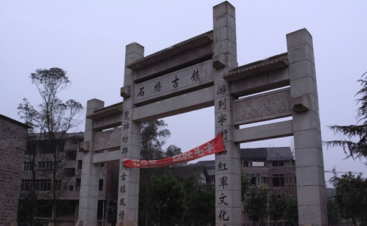

达州石桥火龙是达州市达川区石桥镇的民俗文化活动。闹春已延续千年。整个活动贯穿了请龙、龙点睛、龙请水、烧火龙、送龙等民俗风情，祈求新年风调雨顺、五谷丰登。以舞龙的方式来祈求平安和丰收是全国各地的一种习俗。特别是到了元宵节晚上，数条火龙游街走巷穿梭，居民家家用硝磺、柴碳等原料配制成烟花，尽情地对火龙燃放，使之火花四溅，让人喝彩不已。火龙用竹篾做成龙的躯体，再裱上白纸，涂上颜色，绘上鳞、角、爪，龙首、龙尾长达数十米，浑然一体。然后用硫磺、白硝、木炭制成的火药，做成"土火箭"，还有吐珠、转花、大犁等不同式样的烟花，安装在龙的全身。一条火龙由来十个赤膊青年手擎，加上鼓乐手、擎鳖鱼、小龙虾、鳖、金鱼等人，队伍达几十人。
|
 | |
火龙历史 |
石桥古镇 | |
石桥是达州的一个小镇，始建汉代，明末战毁。清顺治年间"湖广填川"移民重建。数千年的历史积淀，孕育了石桥镇丰富的民俗文化。 |
 |
|
火龙盛况1 |
||
火龙演变 |
||
经过几百年来艺人不断地研究改进，如今火龙由原来丈把长，发展到现在最长可达30多米长。烧火龙有很多讲究，先是要看一个好日子，再请有经验的老师父挑选精壮男子上山去砍竹子，并用三个多月的时间来制作火龙。火龙制作好以后，请当地有声望的老人前去请龙，龙请好后，就开始为龙点睛，然后把龙抬到河边先烧香再向火龙"请水"。正月十一到十五开始了最热闹的烧火龙活动。到了十五元宵夜，活动进入最高潮。古镇的男女老幼，都渴望能看到表演烧火龙，给人们带来吉祥。火花如若烫到你了，那你一定会发大财。特别是擎龙头的就更了不起，出钱最多的才能擎龙头，擎了龙头，在新的一年，一定会行好运，人们叫"大发龙运"(发大财)。火龙在烧前，人们会把龙的长须剪下来丢进一口大锅里，并放好米，煮一锅稀饭，等人们烧完龙后，前来吃龙须饭。吃完饭后，整个活动才宣告结束。 |
||
火龙情结 |
火龙盛况2 |
|
在石桥镇，家家户户的堂屋里都堆着石头花钵，多的七八个，少的两三个。石桥的居民们告诉记者，"耍火龙"是冬天里的一把火，点燃了大家所有的热情。每年，家家户户都要买来硝、硫磺、柴炭、铁屑等原料配制成药，再填进石头花钵里。从正月十一开始的每个晚上，人们就抱着这样的花钵等在家门口，等着火龙的到来。 |
||
火龙盛况3
|
||
1 2